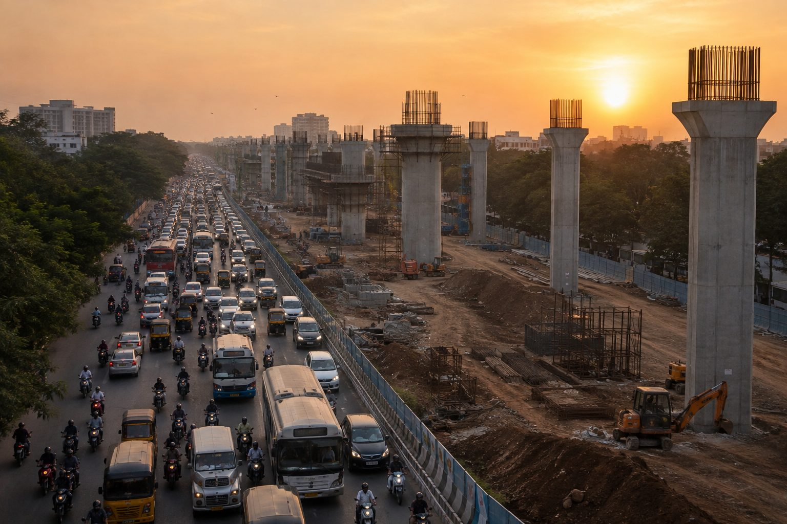

Halfway Through

For the last three days, Hyderabad has been talking about only one thing. The new one-way traffic system around KBR Park. Roads people had used for years suddenly changed.
Routes became longer.
Traffic piled up.
Vehicles were stranded for hours, trying to figure out how to reach their destination. Many openly questioned the decision.
"Who plans something like this?"
"This has only made the city worse."
Then came another announcement. This wasn't a temporary inconvenience for a few days. The new traffic system was expected to continue for nearly 1000 days while the city underwent one of its biggest infrastructure projects. That's when I understood why so many people were upset. It wasn't just today's traffic. It was the thought of living through it for that long. Then one thought quietly crossed my mind.
The commuters and the engineers were looking at the very same roads...
but seeing two completely different cities.
One could only see today's inconvenience. The other could already see tomorrow.
Looking into my own mirror...
I realised how quickly I judge unfinished seasons of my life.
Not because today is difficult...
but because I don't know how long it will last.
A closed door.
A delayed answer.
An unexpected detour.
A season that seems to be getting harder instead of better.
Without even realizing it, I begin writing the ending...
while I'm still living in the middle of the story.
Funny, isn't it?
We would never judge a city by looking at it halfway through construction. Yet we often judge our lives while they're still being built. Perhaps the hardest part isn't today's inconvenience. It's accepting that I don't yet know what tomorrow will look like.
What season of my life have I already decided is going nowhere...
simply because it has lasted longer than I expected?
Have I mistaken a season under construction...
for a life that's falling apart?
Am I trying to write the ending...
while the Builder is still at work?